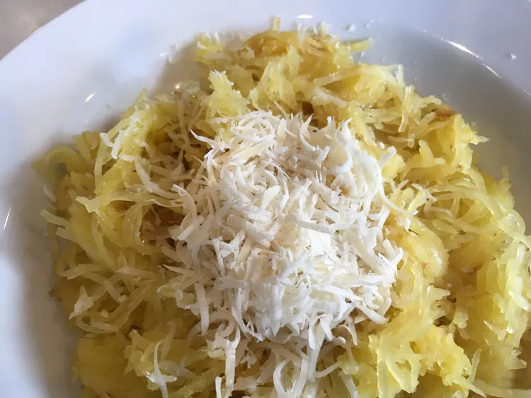

Spaghetti Recipe

This is a very easy recipe for a tasty and practical spaghetti
- 1 spaghetti squash, halved and seeded
- 1 tablespoon extra-virgin olive oil
- salt and freshly ground black pepper to taste
- 1 tablespoon freshly grated Parmesan cheese, or to taste
- Preheat the oven to 350 degrees F (175 degrees C).
Place squash halves cut-side down in a large baking dish.
- Bake in the preheated oven until flesh is easily pierced with a knife, about 40 minutes.
Cool squash for 10 minutes.
- Shred inside of squash with a fork and transfer to a bowl. Add olive oil, salt,
and pepper to shredded squash and toss to coat. Serve with Parmesan cheese.